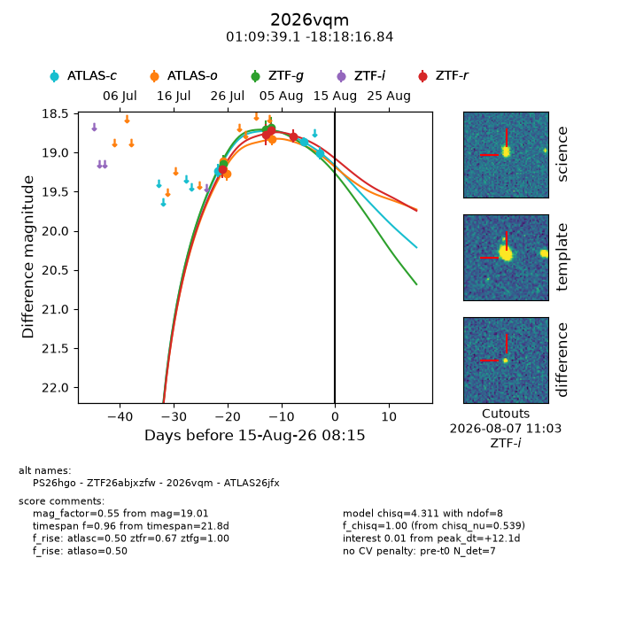
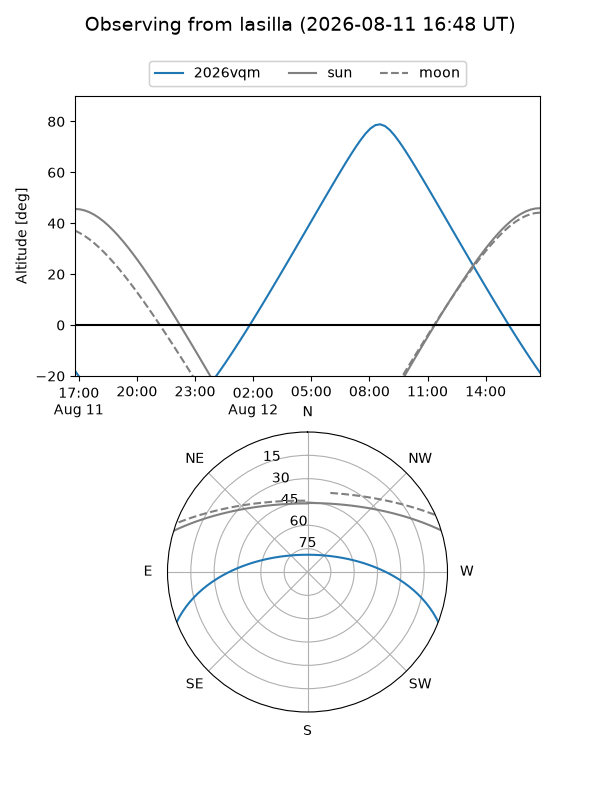
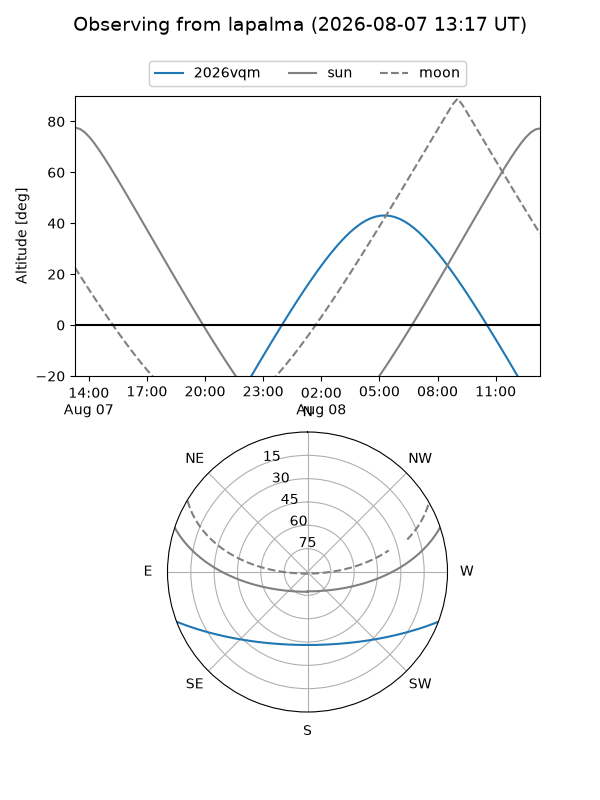
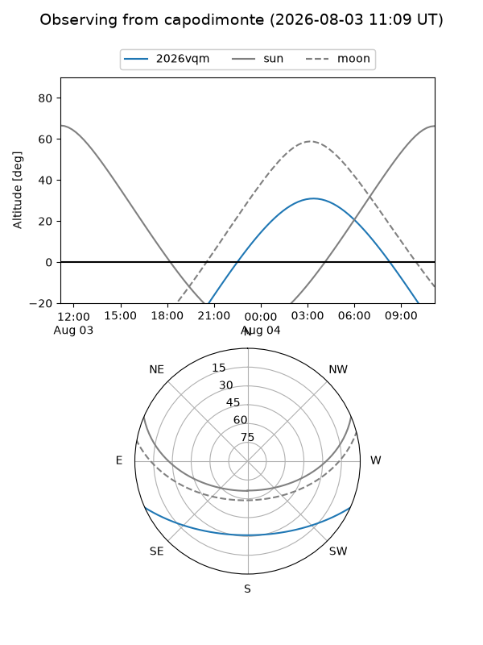
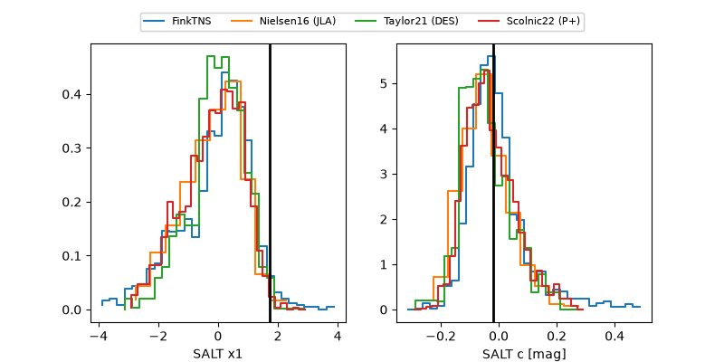

2026vqm
Target 2026vqm at 2026-08-15 08:18
Aliases and brokers:
FINK-ZTF: ztf.fink-portal.org/ZTF26abjxzfw
Lasair-ZTF: lasair-ztf.lsst.ac.uk/objects/ZTF26abjxzfw
ALeRCE-ZTF: alerce.online/object/ZTF26abjxzfw
YSE-PZ: ziggy.ucolick.org/yse/transient_detail/2026vqm
TNS name: wis-tns.org/object/2026vqm
Direct TNS query: direct search
alt names
ZTF26abjxzfw (ztf,fink_ztf)
2026vqm (tns,yse)
ATLAS26jfx (atlas)
PS26hgo (panstarrs)
Coordinates:
equatorial (ra, dec) = 17.4129,-18.30468
equatorial (HMS+DMS) = 01:09:39.11,-18:18:16.84
galactic (l, b) = (149.3034,-80.23052)
Flags:
TNS type: nan
peak dt: +12.1
Photometry:
last atlasc=19.01, atlaso=18.83, ztfg=18.68, ztfr=18.79
3 atlasc, 3 atlaso, 3 ztfg, 4 ztfr detections
Lightcurve

Visibility



Additional plots
